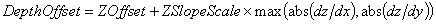
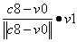

A shadow buffer is similar to a depth buffer. It is a device that records depth information from the viewpoint of a light source instead of from the viewpoint of the camera. When Direct3D renders a 3D scene to a target surface, it can use the information in the shadow buffer to determine whether a given pixel is in shadow.
Shadow mapping is used whenever a texture stage uses a texture of one of the depth formats. In this case, the 4D texture coordinates at that stage (s, t, r, q) are used to perform a special texture lookup. The depth value in the texture at ( s/q, t/q ) is fetched and is compared to the value r/q according to the comparison function in the render state D3DRS_SHADOWFUNC. The result of the comparison is either 1 or 0 and it is returned as the texture color for that stage. If filtering is enabled, the result may be a value between 1 and 0 at the edge of the shadow due to blending with pixels surrounding the point.
To use a shadow buffer in your title, follow these steps:
Before you can use a shadow buffer, you must create one. To create finer resolution shadows, use larger shadow buffers.
#define SHADOWBUFFER_WIDTH 512
#define SHADOWBUFFER_HEIGHT 512
LPDIRECT3DTEXTURE8 pShadowBufferDepth = NULL;
LPDIRECT3DSURFACE8 pShadowBufferTarget = NULL;
IDirect3DSurface8 FakeRenderTarget;
pDevice->CreateTexture( SHADOWBUFFER_WIDTH, SHADOWBUFFER_HEIGHT, 1, 0,
D3DFMT_LIN_D24S8, 0, &pShadowBufferDepth );
ZeroMemory( &FakeRenderTarget, sizeof(FakeRenderTarget) );
XGSetSurfaceHeader( SHADOWBUFFER_WIDTH, SHADOWBUFFER_HEIGHT, D3DFMT_LIN_R5G6B5,
&FakeRenderTarget, 0, 0 );
pShadowBufferTarget = &FakeRenderTarget;
Because you will be changing render targets, you must save the original render target and z-buffer so that they can be restored later.
LPDIRECT3DSURFACE8 pRenderTarget = NULL; LPDIRECT3DSURFACE8 pZBuffer = NULL; pDevice->GetRenderTarget( &pRenderTarget ); pDevice->GetDepthStencilSurface( &pZBuffer );
This step is fairly straightforward, but there are a lot of little details you need to track. You set a viewport to the dimensions of the shadow buffer, clear that viewport of depth information, set up the views and projections from the light's viewpoint, and then disable all color writes.
// Set the shadow buffer as the render target.
LPDIRECT3DSURFACE8 pSurface;
pShadowBufferDepth->GetSurfaceLevel( 0, &pSurface );
pDevice->SetRenderTarget( pShadowBufferTarget, pSurface );
// Set the viewport to the shadow buffer dimensions and clear it.
D3DVIEWPORT8 viewport = { 0, 0, SHADOWBUFFER_WIDTH, SHADOWBUFFER_HEIGHT, 0.0f, 1.0f };
pDevice->SetViewport( &viewport );
pDevice->Clear( 0, NULL, D3DCLEAR_ZBUFFER, 0, 1.0f, 0 );
// Set up the views and projection from the standpoint of the light
// source and not the camera.
pDevice->SetTransform( D3DTS_WORLD, &matWorld );
pDevice->SetTransform( D3DTS_VIEW, &matLightView );
pDevice->SetTransform( D3DTS_PROJECTION, &matLightProj );
It is important that the matrices, matLightView and matLightProj, are created in such a way that any objects in the scene that should be shadowed are included in the viewing frustrum. Furthermore, don't forget that these matrices are oriented from the light's position and not the camera's.
// Don't write to the color buffer. pDevice->SetRenderState( D3DRS_COLORWRITEENABLE, 0 ); // Set the texture stage states. pDevice->SetTextureStageState( 0, D3DTSS_MAGFILTER, D3DTEXF_LINEAR ); pDevice->SetTextureStageState( 0, D3DTSS_MINFILTER, D3DTEXF_LINEAR ); pDevice->SetTextureStageState( 0, D3DTSS_MIPFILTER, D3DTEXF_LINEAR ); pDevice->SetTextureStageState( 0, D3DTSS_ADDRESSU, D3DTADDRESS_WRAP ); pDevice->SetTextureStageState( 0, D3DTSS_ADDRESSV, D3DTADDRESS_WRAP );
It is common for depth precision differences to cause the depth comparison to erroneously determine that a polygon is shadowing itself. To eliminate these self-shadowing artifacts, use a polygon offset during the first render pass. You enable polygon offsets by using the D3DRS_SOLIDOFFSETENABLE (or D3DRS_POINTOFFSETENABLE or D3DRS_WIREFRAMEOFFSETENABLE) render state. These offsets bring polygons slightly forward. How far forward is determined by the equation:

Where ZOffset and ZSlopeScale are determined by the render states D3DRS_POLYGONOFFSETZOFFSET and D3DRS_POLYGONOFFSETZSLOPESCALE. Experimenting with the scene will best determine what these values should be set to.
// Turn on the polygon offset to remove distortion effects. pDevice->SetRenderState( D3DRS_SOLIDOFFSETENABLE, TRUE ); float fZOffset = 0.0f; float fZSlopeScale = 1.0f; pDevice->SetRenderState( D3DRS_POLYGONOFFSETZOFFSET, *((DWORD*)&fZOffset) ); pDevice->SetRenderState( D3DRS_POLYGONOFFSETZSLOPESCALE, *((DWORD*)&fZSlopeScale) );
Now you need to render the scene. Because all color writing was disabled earlier, there is no need to set any textures at this point. The goal is to record the depth information of the geometry so that it may be used later.
Set the render states and views back so that the scene can be rendered in the original color buffer with the shadows included.
pDevice->SetRenderTarget( pRenderTarget, pZBuffer );
pDevice->SetRenderState( D3DRS_COLORWRITEENABLE, D3DCOLORWRITEENABLE_ALL );
pDevice->SetRenderState( D3DRS_SOLIDOFFSETENABLE, FALSE );
pDevice->Clear( 0, NULL, D3DCLEAR_TARGET|D3DCLEAR_ZBUFFER|D3DCLEAR_STENCIL,
0x00000000, 1.0f, 0 );
// Restore the view and projection to the camera space.
pDevice->SetTransform( D3DTS_VIEW, &matCameraView );
pDevice->SetTransform( D3DTS_PROJECTION, &matCameraProj );
The shadow buffer works by comparing the z texture coordinate values with those values recorded in the shadow buffer. For normal usage, a point is shadowed if the shadow buffer value is greater than the z texture coordinate. Enable this comparison using the D3DRS_SHADOWFUNC render state. To enable normal shadows using the shadow buffer, set this render state to D3DCMP_GREATER; to disable shadows, set it to D3DCMP_NEVER.
// Turn on shadow buffer comparisons. Device->SetRenderState( D3DRS_SHADOWFUNC, D3DCMP_GREATER );
The shadow function set in D3DRS_SHADOWFUNC will compare all textures set on the device that have a depth format (D3DFMT_D24S8, D3DFMT_LIN_D24S8, D3DFMT_F24S8, D3DFMT_LIN_F24S8, D3DFMT_D16, D3DFMT_LIN_D16, D3DFMT_F16, or D3DFMT_LIN_F16). In this example there is only one shadow buffer and it is set in texture stage 1.
// Set the shadow buffer texture. pDevice->SetTexture( 1, pShadowBufferDepth ) pDevice->SetTextureStageState( 1, D3DTSS_ADDRESSU, D3DTADDRESS_BORDER ); pDevice->SetTextureStageState( 1, D3DTSS_ADDRESSV, D3DTADDRESS_BORDER ); pDevice->SetTextureStageState( 1, D3DTSS_BORDERCOLOR, 0xffffffff );
Shadows are much easier to do in the programmable pipeline than in the fixed function pipeline. The vertex shader must accomplish the following tasks:

XGMATRIX matViewport; XGMatrixIdentity( &matViewport ); matViewport._11 = SHADOWBUFFER_WIDTH * 0.5f; matViewport._22 = -SHADOWBUFFER_HEIGHT * 0.5f; matViewport._33 = D3DZ_MAX_D24S8; // Maximum depth value possible for the D3DFMT_D24S8 depth buffer. matViewport._41 = SHADOWBUFFER_WIDTH * 0.5f + 0.5f; matViewport._42 = SHADOWBUFFER_HEIGHT * 0.5f + 0.5f;The half texel offset is an approximation that is necessary because of the differences between texture addressing and pixel addressing. For a more detailed description of how to compute the scale and offset, see Calculating the Screen Space Scale and Offset Parameters.
Here is a vertex shader that will accomplish these tasks:
vs.1.0 ; Constants: ; c0 - c3 - WVP Matrix (WORLD*CAMERAVIEW*CAMERAPROJECTION) ; c4 - c7 - WT Matrix (WORLD*LIGHTVIEW*LIGHTPROJECTION*VIEWPORT) ; c8 - local space light position. ; In: ; v0 - Position ; v1 - Normal ; v2 - TexCoord0 ; Out: ; oPos - Position ; oTn - TextureCoords ;vertex->screen dp4 oPos.x, v0, c0 dp4 oPos.y, v0, c1 dp4 oPos.z, v0, c2 dp4 oPos.w, v0, c3 ;diffuse lighting add r0,c8,-v0 dp3 r0.w,r0,r0 rsq r1.x,r0.w mul r0,r0,r1.x dp3 oD0,v1,r0 ;decal texture mov oT0, v2 ;vertex->shadowbuffer texcoords dp4 oT1.x, v0, c4 dp4 oT1.y, v0, c5 dp4 oT1.z, v0, c6 dp4 r0.w, v0, c7 ;clamp w (q) to 0 slt r1, c0, c0 max r0.w, r0.w, r1.w mov oT1.w, r0.w
Before re-rendering the scene, you must set the vertex shader on the device using IDirect3DDevice8::SetVertexShader, and pass in the constants (light position and matrices) using IDirect3DDevice8::SetVertexShaderConstant. The following code assumes that dwVShader is the handle to the vertex shader above.
// Set the vertex shader. pDevice->SetVertexShader( dwVShader ); // Set the vertex shader constants. XGMATRIX matWVP, matWT; XGMatrixMultiply( &matWVP, &matCameraView, &matCameraProj ); XGMatrixTranspose( &matWVP, &matWVP ); pDevice->SetVertexShaderConstant( 0, &matWVP, 4 ); XGMatrixMultiply( &matWT, &matLightView, &matLightProj ); XGMatrixMultiply( &matWT, &matWT, &matViewport ); XGMatrixTranspose( &matWT, &matWT ); pDevice->SetVertexShaderConstant( 4, &matWT, 4 ); // LightPos is a D3DVECTOR containing the position of the light source. pDevice->SetVertexShaderConstant( 8, &LightPos, 1 );
The pixel shader needs to handle the underlying textures, the diffuse and ambient lighting, and the shadows. The following pixel shader program accomplishes this:
xps.1.1 ; Constants: ; c0 - ambient light ; In: ; t0 - underlying texture ; t1 - shadow texture def c0, 0.5f, 0.5f, 0.5f, 1.0f tex t0 tex t1 mul r0, v0, t1 ;diffuse*shadow add r0, r0, c0 ;diffuse*shadow+ambient mul r0, t0, r0 ;texture*light xfc 1-zero, r0, zero, zero, zero, zero, zero
Before re-rendering the scene, you also need to set the pixel shader on the device using IDirect3DDevice8::SetPixelShader. The following code assumes that dwPShader is the handle to the pixel shader above.
pDevice->SetPixelShader( dwPShader );
Having completed all the set-up, you now need to re-render the scene with all of its textures. After the scene is rendered, reset the shadow buffer's state. The following code assumes that the scene consists of a cube (with vertex data vCube and texture pCubeTex) resting on a floor (with vertex data vFloor and texture pFloorTex).
// Prepare the texture stages. pDevice->SetTextureStageState( 0, D3DTSS_COLOROP, D3DTOP_SELECTARG1 ); pDevice->SetTextureStageState( 0, D3DTSS_COLORARG1, D3DTA_TEXTURE ); // Render the cube. pDevice->SetTexture( 0, pCubeTex ); pDevice->DrawPrimitiveUP( D3DPT_QUADLIST, 6, vCube, sizeof(CUSTOMVERTEX) ); // Render the floor. pDevice->SetTexture( 0, pFloorTex ); pDevice->DrawPrimitiveUP( D3DPT_QUADLIST, 1, vFloor, sizeof(CUSTOMVERTEX) ); // Reset the state. pDevice->SetTexture( 0, NULL ); pDevice->SetTexture( 1, NULL ); pDevice->SetRenderState( D3DRS_SHADOWFUNC, D3DCMP_NEVER ); pDevice->SetVertexShader( NULL ); pDevice->SetPixelShader( NULL ); // Finally, present the scene, shadows and all. pDevice->Present( NULL, NULL, NULL, NULL );